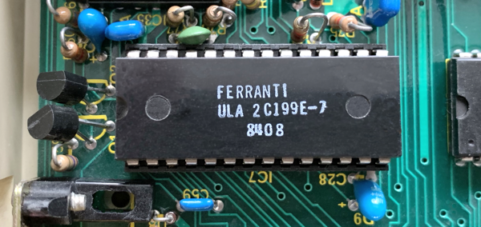
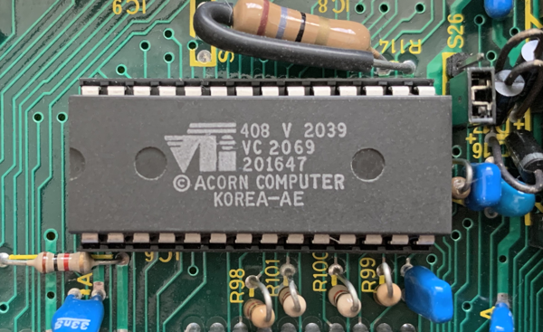

Register locations for memory-mapped hardware
- §1. Memory Mapping
- §2. FRED
- §3. JIM
- §4. SHEILA
- §5. ACIA 6850, Control Register ($FE08)
- §6. ACIA 6850, Status Register ($FE08)
- §7. Serial ULA, Control Register ($FE10)
- §8. Video ULA Control Register ($FE20)
- §9. Video ULA Palette Register ($FE21)
- §10. System VIA, Register B ($FE40)
- §11. System VIA, Register A ($FE41)
- §12. System VIA, Data Direction Register B ($FE42) (aka 'DDRB')
- §13. System VIA, Data Direction Register A ($FE43) (aka 'DDRA')
- §14. System VIA, Timer 1 registers ($FE44-7)
- §15. System VIA, Timer 2 registers ($FE48-9)
- §16. The System VIA, Shift Register ($FE4A)
- §17. System VIA, Auxiliary Control Register ($FE4B) (aka 'ACR')
- §18. System VIA, Peripheral Control Register ($FE4C) (aka 'PCR')
- §19. System VIA, Interrupt Flag Register ($FE4D) (aka 'IFR')
- §20. System VIA, Interrupt Enable Register ($FE4E) (aka 'IER')
- §21. User VIA
- §22. User VIA, peripheral control register ($FE6C)
- §23. User VIA, interrupt flag register ($FE6D)
- §24. User VIA, interrupt enable register ($FE6E)
- §25. User VIA, Register B no handshake ($FE6F)
- §26. ADC 7002 - Analogue to digital conversion
- §27. The Tube - Registers
Addresses in the range $FC00-$FEFF are not mapped to the OS ROM as might be expected, but are connected to hardware devices. Consequently the CPU can communicate with hardware devices by reading and writing to specific addresses in this range. $FC00-$FCFF - FRED - Addresses are assigned to external devices: Winchester Disc / Teletext / Prestel / IEEE488 etc $FD00-$FDFF - JIM - Access to an optional extra 64K of RAM. See .jimPage. $FE00-$FEFF - SHEILA - Read / Write hardware internal to the BBC Micro (see next section). The OS provides OSBYTE calls for user programs to access these locations. See .osbyte146EntryPoint. Unlike the Commodore 64, this region of memory is permanently assigned to memory mapped IO, and is not bank switchable. Because of this address mapping, the underlying memory in the ROM can't be read or written by the OS. This memory stores credits text instead. See Chapter 22: Credits.
Accesses peripherals on the 1Mhz bus. Peripherals are allocated address ranges as follows: Address range Hardware allocated Later additions --------------------------------------------------------------------- $FC00 - $FC0F Test hardware - $FC10 - $FC13 Teletext - $FC14 - $FC1F Prestel - $FC20 - $FC27 IEEE 488 Interface - $FC28 - $FC2F - Econet (Electron) $FC30 - $FC3F Cambridge Ring Interface - $FC40 - $FC47 Winchester Disc } Compact Flash Interface $FC48 - $FC4F Reserved } $FC50 - $FC5F - - $FC60 - $FC6F Serial expansion - $FC70 - $FC7F - - $FC80 - $FC8F Test hardware - $FC90 - $FC9F - - $FCA0 - $FCAF - - $FCB0 - $FCBF - 6522 VIA (Electron) $FCC0 - $FCCF - 1770 FDC (Electron) $FCD0 - $FCDF - - $FCE0 - $FCEF - Tube (Electron) $FCF0 - $FCF7 - - $FCF8 - $FCFD - RetroClinic DataCentre $FCFE JIM paging register MSB - $FCFF JIM paging register LSB -
.fredPage = $FC00
If fitted JIM allows access to either an optional 64K of RAM or even up to 16Mb of RAM, one page at a time. Select which page by writing to location $FCFF (the JIM paging register) and if a 16 bit register is available also write to $FCFE. Then $FD00-$FDFF can be read or written to as RAM. Reading and writing is about half the speed of regular RAM.
.jimPage = $FD00 .jimPagedEntryPoint = $FDFE at reset time, holds the address to call to initialise JIM hardware
.sheilaPage = $FE00 .crtcAddressRegister = $FE00 .crtcAddressWrite = $FE01
§5. ACIA 6850, Control Register ($FE08).
This is used for writing values. By convention (for clarity) we use the Status Register (See .acia6850StatusRegister below) for reading values. Even though they both refer to the same memory location, they have different meanings depending on whether it's being read or written. bits 0,1 - the counter divide select bits (CR0/CR1) %00 - divide counter by 1 %01 - divide counter by 16 (used for 1200 baud tape) %10 - divide counter by 64 (default for RS-423) (used for 300 baud tape) %11 - master reset bit 2 - set means odd parity; otherwise even parity bit 3 - set means 1 stop bit; otherwise 2 stop bits bit 4 - set means 8 bit word; otherwise 7 bit word bits 5,6: %00 - 'Request To Send' ('RTS') low, transmit interrupt disabled %01 - RTS low, transmit interrupt enabled %10 - RTS high, transmit interrupt disabled %11 - RTS low, break level on data output, transmit interrupt disabled bit 7 - enable receive data register full, overrun, DCD transition interrupts DCD = Data Carrier Detect interrupt occurs when the tone at the end of a cassette block is discontinued RTS low is the active state ('Request To Send')
.acia6850ControlRegister = $FE08
§6. ACIA 6850, Status Register ($FE08).
This is used for reading values. By convention (for clarity) we use the Control Register (See .acia6850ControlRegister above) for writing values. Even though they both refer to the same memory location, they have different meanings depending on whether it's being read or written. bit 0 - set when a receiver interrupt is generated bit 1 - set when a transmit interrupt is generated bit 2 - set when a Data Carrier Detect ('DCD') interrupt is generated bit 3 - set if the 6850 is not clear to send ('CTS') bit 4 - framing error } only valid if bit 0 set bit 5 - receiver over run } only valid if bit 0 set bit 6 - parity error } only valid if bit 0 set bit 7 - set if the 6850 generated the current interrupt
.acia6850StatusRegister = $FE08 .acia6850DataRegister = $FE09 ACIA 6850, transmit / receive data register ('TDR'/'RDR')
§7. Serial ULA, Control Register ($FE10).

bits 0-2 - transmit rate bits 3-5 - receive rate %000 19200 baud %001 9600 baud %010 4800 baud %011 2400 baud %100 1200 baud %101 300 baud %110 150 baud %111 75 baud bit 6 - if set, the RS-423 system has control of the serial system; otherwise the cassette system has control bit 7 - if set, switch on the cassette motor and relay
.serialULAControlRegister = $FE10 Serial ULA control register
§8. Video ULA Control Register ($FE20).

https://github.com/YazanMehyar/FPGA-BBC-micro/blob/master/docs/VULA.txt bit 0 = flash on/off bit 1 = teletext / normal bit 2/3 = number of characters per line %00=10 characters %01=20 characters %10=40 characters %11=80 characters bit 4 = 0 means low clock frequency, used in MODES 4-7 1 means high clock frequency, used in MODES 0-3 bit 5-7 = cursor width %000 hide cursor %100 MODE 0,3,4,6 %110 MODE 1,5 %111 MODE 2 %010 MODE 7
.videoULAControlRegister = $FE20 Video ULA control register
§9. Video ULA Palette Register ($FE21).
Write to this register to change the palette. The top four bits define the logical colour field, and the bottom four bits are the physical colour EOR 7. Changing the palette is a little more work than you might expect however: 16 colour MODEs (MODE 2) ------------------------ This is straightforward. Write the logical colour to the top four bits, and the physical colour EOR 7 in the bottom four bits. 2 colour MODEs (MODE 0,3,4,6) ----------------------------- Bit 7 defines the logical colour, but ALL combinations of bits 4-6 must be set individually in order to make the change properly. e.g. to change logical colour 1 to physical colour 2: LDA #$85 STA .videoULAPaletteRegister LDA #$95 STA .videoULAPaletteRegister LDA #$A5 STA .videoULAPaletteRegister LDA #$B5 STA .videoULAPaletteRegister LDA #$C5 STA .videoULAPaletteRegister LDA #$D5 STA .videoULAPaletteRegister LDA #$E5 STA .videoULAPaletteRegister LDA #$F5 STA .videoULAPaletteRegister 4 colour MODEs (MODE 1,5) ------------------------- Bits 5 and 7 define the logical colour. But ALL combinations of bits 4 and 6 must also be set to make the change properly. e.g. to change logical colour 1 to physical colour 2: LDA #$25 STA .videoULAPaletteRegister LDA #$35 STA .videoULAPaletteRegister LDA #$65 STA .videoULAPaletteRegister LDA #$75 STA .videoULAPaletteRegister More OS friendly ways to set the palette are VDU 19; OSWORD 12 (which is faster than the VDU 19 sequence of calls and can be used in interrupts); or OSBYTE 155 (but this only writes to the ULA register once, so multiple calls are still needed as above). If using one of the OS friendly ways above to change the palette then the physical colours are: 0 = black 8 = flashing black-white 1 = red 9 = flashing red-cyan 2 = green 10 = flashing green-magenta 3 = yellow 11 = flashing yellow-blue 4 = blue 12 = flashing blue-yellow 5 = magenta 13 = flashing magenta-green 6 = cyan 14 = flashing cyan-red 7 = white 15 = flashing white-black If writing directly to .videoULAPaletteRegister ($FE21) then the values for the physical colour are different: value to write = physical colour from table above EOR 7.
.videoULAPaletteRegister = $FE21 Video ULA palette register .romSelectRegister = $FE30
§10. System VIA, Register B ($FE40).
Notes: The bottom four bits are used for writing, and the top four bits are used for reading. (See .systemVIADataDirectionRegisterB) Values 0-15 can be written to System VIA Register B (Output): Value Effect ------------------------- 0 Enable sound chip 1 Enable Read Speech 2 Enable Write Speech 3 Disable Keyboard auto scanning 4 Hardware scrolling - set C0=0 (See below) 5 Hardware scrolling - set C1=0 (See below) 6 Turn on CAPS LOCK LED 7 Turn on SHIFT LOCK LED 8 Disable sound chip 9 Disable Read Speech 10 Disable Write Speech 11 Enable Keyboard auto scanning 12 Hardware scrolling - set C0=1 (See below) 13 Hardware scrolling - set C1=1 (See below) 14 Turn off CAPS LOCK LED 15 Turn off SHIFT LOCK LED The values of C0 and C1 together determine the start scroll address for the screen: C0 C1 Screen Used in Address Regular MODEs ------------------------------------ 0 0 $4000 3 0 1 $5800 4,5 1 0 $6000 6 1 1 $3000 0,1,2 When reading from this address the top four bits are read: bit 7: Speech processor 'ready' signal bit 6: Speech processor 'interrupt' signal bit 4-5: joystick buttons (bit is zero when button pressed)
.systemVIARegisterB = $FE40 System VIA Register B (Input and Output)
§11. System VIA, Register A ($FE41).
This register is not used. The non-handshaking variant is used instead. See .systemVIADataDirectionRegisterA for details.
.systemVIARegisterA = $FE41 System VIA Register A (Input and Output)
§12. System VIA, Data Direction Register B ($FE42) (aka 'DDRB').
When writing data into Register B (.systemVIARegisterB), the bits that are set on DDRB indicate which bits are actually written into Register B. The bits that are clear on DDRB are used to read from Register B. DDRB is only written once on startup where it is initialised to %00001111 (see .setUpSystemVIA) and the OS expects it to remain that way. Only the bottom four bits of .systemVIARegisterB are used when writing, and only the upper four bits are read from .systemVIARegisterB. See .systemVIARegisterB.
.systemVIADataDirectionRegisterB = $FE42 System VIA data direction register B (DDRB)
§13. System VIA, Data Direction Register A ($FE43) (aka 'DDRA').
The keyboard, sound and speech systems use Data Direction Register A. Each bit of DDRA indicates whether data can be written or read on that bit when data is accessed via .systemVIARegisterANoHandshake. This is similar to DDRB. Unlike DDRB, the OS modifies DDRA frequently to set the appropriate bits for accessing the device (often in the IRQ interrupt code). Once set, data is read or written to .systemVIARegisterANoHandshake as needed. See .systemVIARegisterANoHandshake. Sound: When outputting sound, DDRA is set to %11111111 meaning all bits of data that are subsequently written to .systemVIARegisterANoHandshake are output bits. (See .sendToSoundChipFlagsAreadyPushed) Speech: For speech, DDRA is set to %00000000 (for reading) or %11111111 (for writing) as needed. (See .readWriteSpeechProcessorPushedFlags) Keyboard: When reading the keyboard, DDRA is set to (%011111111). The key to read is written into bits 0-6 of .systemVIARegisterANoHandshake, and the 'pressed' state of that key is then read from bit 7. (See .interrogateKeyboard) (See .scanKeyboard)
.systemVIADataDirectionRegisterA = $FE43 System VIA data direction register A (DDRA)
§14. System VIA, Timer 1 registers ($FE44-7).
This is a 1Mhz countdown timer. An IRQ is triggered when the timer reaches zero. The OS uses this timer as a 100Hz timer to update various parts of the OS. It is expected to remain as a 100Hz timer if the OS is to continue working properly. User VIA Timers are available for user programs instead. See .irq1CheckSystemVIA100HzTimer. Timer 1 can be configured in one of two modes by writing to the ACR (see .systemVIAAuxiliaryControlRegister): One-shot mode: .systemVIATimer1LatchLow and .systemVIATimer1CounterHigh form a 16 bit countdown value. Write to .systemVIATimer1LatchLow first then writing to .systemVIATimer1CounterHigh starts the timer. When the timer is complete a timer IRQ interrupt is generated. This only happens once. Free-run mode (aka 'Continuous interrupts'): .systemVIATimer1LatchLow and .systemVIATimer1LatchHigh are initialised to the initial timeout value for the timer. The timer starts when .systemVIATimer1CounterHigh is also written. Unlike one-shot mode, once the timeout interrupt has happened the counter is reset to the values in the latches and the process repeats. The process can be stopped by writing .systemVIATimer1CounterHigh, by reading .systemVIATimer1CounterLow, or by writing to the interrupt flag. This is the mode set by the OS for Timer 1 at startup. See .setUpPage2.
.systemVIATimer1CounterLow = $FE44 .systemVIATimer1CounterHigh = $FE45 .systemVIATimer1LatchLow = $FE46 .systemVIATimer1LatchHigh = $FE47
§15. System VIA, Timer 2 registers ($FE48-9).
Timer 2 (like Timer 1) is a 1MHz countdown timer with an IRQ being generated when the counter reaches zero. It is used by the OS to update the Speech system if present. It also has two modes of operation, selected by writing to the ACR. (See .systemVIAAuxiliaryControlRegister). One-shot mode: This is similar to Timer 1 (above). Write the low byte of the timer first .systemVIATimer2CounterLow then writing to the high byte of the counter .systemVIATimer2CounterHigh starts the timer. When the timer is countdown reaches zero a timer IRQ interrupt is generated. This only happens once. Pulse counting mode: This is unlike Timer 1. It counts down the number of negative going pulses applied to System VIA input pin PB6. Firstly write to .systemVIATimer2CounterLow, then writing to .systemVIATimer2CounterHigh will start the countdown. When PB6 is pulsed low for the appropriate number of times then an IRQ interrupt occurs. This only happens once. This is the default mode as initialised at startup. Timer 2 is started by the Speech system (if present) as needed to time Speech. The timer is cleared by the OS when a Timer 2 IRQ is received (see .irq1CheckSystemVIASpeech). It is also cleared at startup. See .setUpPage2.
.systemVIATimer2CounterLow = $FE48 .systemVIATimer2CounterHigh = $FE49
§16. The System VIA, Shift Register ($FE4A).
This is not used in this OS. It is designed to be used for serial data I/O by shifting bits one at a time under the control of an internal modulo-8 counter. See NAUG Section 22.4.9, Page 395.
.systemVIAShiftRegister = $FE4A
§17. System VIA, Auxiliary Control Register ($FE4B) (aka 'ACR').
bit 0: PA latch enable bit 1: PB latch enable bits 2-4: Shift register mode bit 5: Timer 2 mode: 0=One-shot mode; 1=Pulse counting mode. bit 6: Timer 1 mode: 0=One shot mode; 1=Free-run mode. bit 7: Enable pulsing of System VIA output pin PB7. When enabled, Timer 1 will set PB7 as follows: In One-shot mode: PB7 is cleared when Timer 1 started, PB7 is set when Timer 1 one-shot mode times out. In Free-run mode: PB7 is inverted when Timer 1 times out. In the reset code (see .setUpPage2) this register is initialised to: (a) disable the latches and the shift register, (b) set Timer 2 as an interval timer, (c) set Timer 1 as free-run mode (aka continuous interrupts). Otherwise this register is not used by the OS. See NAUG Section 22.4.8, Page 395.
.systemVIAAuxiliaryControlRegister = $FE4B
§18. System VIA, Peripheral Control Register ($FE4C) (aka 'PCR').
bit 0 = CA1 interrupt control Writing to CA1 means "data taken" 0 means negative active edge 1 means positive active edge bits 1-3 = CA2 control mode CA2 signifies "data ready" bit 4 = CB1 interrupt control Writing to CB1 means "data taken" 0 means negative active edge 1 means positive active edge bits 5-7 = CB2 control mode CB2 signifies "data ready" control mode: 000 = negative edges active on input 001 = independent interrupt; input negative edge 010 = positive edges active on input 011 = independent interrupt; input positive edge 100 = handshake output mode 101 = pulse output mode 110 = low output 111 = high output The System VIA PCR initialises like so (See .setUpPage2): CA1 has negative active edge (vertical sync) CA2 positive edges active on input (keyboard) CB1 has negative active edge (end of analogue conversion) CB2 negative active edges on input (light pen strobe)
.systemVIAPeripheralControlRegister = $FE4C
§19. System VIA, Interrupt Flag Register ($FE4D) (aka 'IFR').
bit 0 = key pressed bit 1 = vertical sync occurred bit 2 = shift register timeout (unused) bit 3 = lightpen strobe off screen bit 4 = analogue conversion completed bit 5 = timer 2 has timed out (used for speech) bit 6 = timer 1 has timed out (100Hz signal) bit 7 = (when reading) master interrupt flag (0-6 invalid if clear) Used in interrupt code: Reading ------- If bit 7 is set then the System VIA caused the current interrupt. The remaining bits can then be checked to see the exact cause. Writing ------- Clear bit 7 and set a bit 0-6 to clear that interrupt.
.systemVIAInterruptFlagRegister = $FE4D
§20. System VIA, Interrupt Enable Register ($FE4E) (aka 'IER').
Each bit controls whether an interrupt is enabled or disabled. bit 0 = key pressed bit 1 = vertical sync occurred bit 2 = shift register timeout (unused) bit 3 = light pen strobe off screen bit 4 = analogue conversion completed bit 5 = timer 2 timed out (used for speech) bit 6 = timer 1 timed out (100Hz signal) bit 7 = enable/disable interrupt value (see below) Writing: -------- To enable an interrupt, write a byte with bit 7 set and set the desired bit(s) (0-6). To disable an interrupt, write a byte with bit 7 clear and set the desired bit(s) (0-6). Reading: -------- Bits 0-6 are read as expected. Bit 7 is always set when read.
.systemVIAInterruptEnableRegister = $FE4E See .systemVIADataDirectionRegisterA. .systemVIARegisterANoHandshake = $FE4F System VIA Register A without handshaking
Port A is the (Centronics) parallel printer port (output only) Port B is the user port (input and output) (unused by the OS) See .openPrinterChannel for details of how to write to the printer. The data direction registers work as they do on the System VIA (see .systemVIADataDirectionRegisterB) The User VIA has Timer 1 and Timer 2. They work in the same way as the timers on the System VIA. These are not used by the OS so are available for user programs. See .systemVIATimer1CounterLow. See .systemVIATimer2CounterLow. The auxiliary control register works the same way as on the System VIA. See .systemVIAAuxiliaryControlRegister. The shift register is unused.
.userVIARegisterB = $FE60 Register B (input/output) .userVIARegisterA = $FE61 Register A (output) .userVIADataDirectionRegisterB = $FE62 data direction register B .userVIADataDirectionRegisterA = $FE63 data direction register A .userVIATimer1CounterLow = $FE64 Timer 1 counter (low) .userVIATimer1CounterHigh = $FE65 Timer 1 counter (high) .userVIATimer1LatchLow = $FE66 Timer 1 latch (low) .userVIATimer1LatchHigh = $FE67 Timer 1 latch (high) .userVIATimer2CounterLow = $FE68 Timer 2 counter (low) .userVIATimer2CounterHigh = $FE69 Timer 2 counter (high) .userVIAShiftRegister = $FE6A shift register .userVIAAuxiliaryControlRegister = $FE6B auxiliary control register
§22. User VIA, peripheral control register ($FE6C).
This works the same as on the System VIA (See .systemVIAPeripheralControlRegister). The User VIA PCR initialises like so (See .setUpPage2): CA1 interrupt on -ve edge (usually printer Acknowledge) CA2 high output (usually printer strobe) CB1 interrupt on -ve edge (user port) CB2 negative edge (user port)
.userVIAPeripheralControlRegister = $FE6C Peripheral control register
§23. User VIA, interrupt flag register ($FE6D).
bit 1 = printer interrupt bit 5 = timer 2 timed out interrupt bit 6 = timer 1 timed out interrupt Writing: Clear bit 7 to clear each of the interrupts indicated by the other set bits. Or set bit 7 to raise each of the interrupts. e.g. To clear a printer interrupt, clear bit 7 and set bit 1 Reading: bit 1 set signifies a parallel printer interrupt. bit 5 set signifies timer 2 timed out bit 6 set signifies timer 1 timed out bit 7 set means the current interrupt is from the User VIA (See .irq1CheckUserVIA)
.userVIAInterruptFlagRegister = $FE6D Interrupt flag register
§24. User VIA, interrupt enable register ($FE6E).
bit 1 = printer interrupt bit 5 = timer 2 timed out interrupt bit 6 = timer 1 timed out interrupt Writing: Clear bit 7 to disable each of the interrupts indicated by the other set bits. Or set bit 7 to enable each of the interrupts. e.g. To disable printer interrupts, clear bit 7 and set bit 1 To enable printer interrupts, set bit 7 and set bit 1 Reading: bit 7 is always read as set when reading. (See .irq1CheckUserVIA)
.userVIAInterruptEnableRegister = $FE6E Interrupt enable register
§25. User VIA, Register B no handshake ($FE6F).
.userVIARegisterBNoHandshake = $FE6F Register B but no handshake
§26. ADC 7002 - Analogue to digital conversion.
See .osbyte17EntryPoint
.adcDataStatusRegister = $FEC0 For reading the current ADC conversion state .adcStartConversionRegister = $FEC0 For writing when we want to start an ADC conversion .adcDataHighByte = $FEC1 ADC (7002) high data byte .adcDataLowByte = $FEC2 ADC (7002) low data byte
See NAUG Section 18.3, Page 328
.tubeULAStatusRegister = $FEE0 Tube ULA Status Register .tubeULADataRegister3 = $FEE5